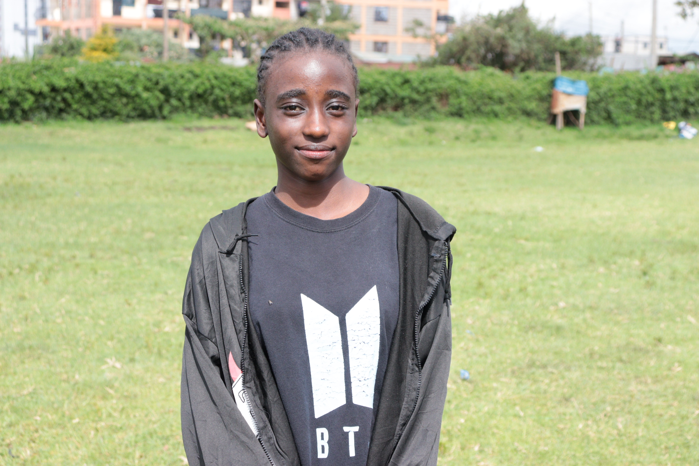
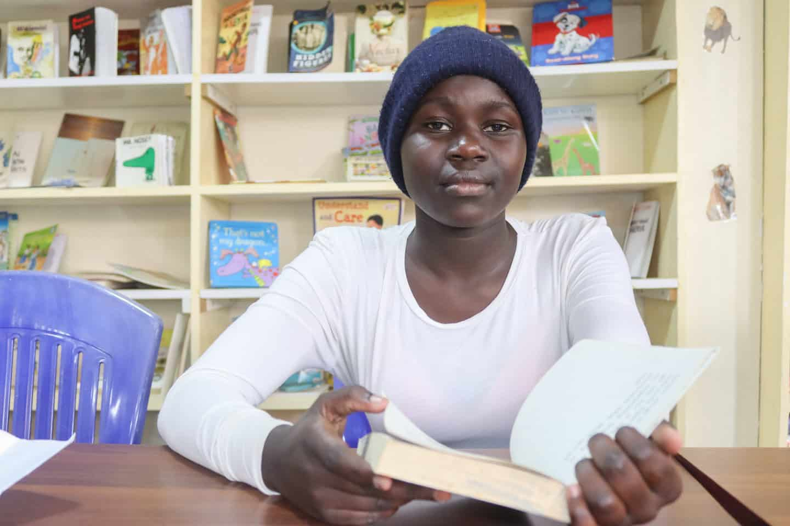

We are two in one. we are both in form4. we are joining the university in mexico in a state called chiwawa. We study medicine engineering and many others like catering. We study at the university of oxford in the year 2024 be blessed
 Our hobbies are dancing,cooking,singing and watching videos.We also like feeding the dogs together with rabbits. We visit the sick in the hospital and watching football games.Cooking is the best thing ever
We like travelling all round the world and exploring new things. So far we explored red sea 15 yrs ago and made a history of being the best explores in the worldwide. We made a history of being the greatest women in the world
We like driving all round with a land rover and land crusier we are proud of ourselves and hobbies.We like skating and we are the best skaters world wide that is why we enjoy doing this. Our dad owns the biggest restaurant which is KFC and that is were we learned to cook, we love our parents and they are our role models all thanks to God for the best family
Our favourite subjects are geography and phyics. We like them because of our career we want in future.We would like to be great people in the society,help those who are in need and make our lives better.We belive in a saying that goes education is the key to our lives,the more hardwork we put in our education the more our future is brighter
| NAME | SUBJECT | GRADE |
|---|---|---|
| Sasha | Mathematics | A |
| Stacy | English | A |